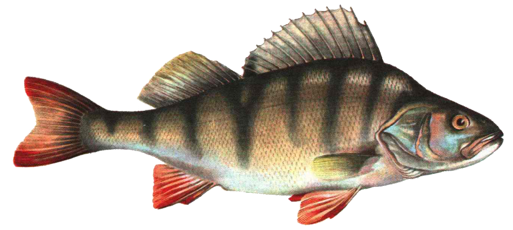

Катерина, ты меня любишь?
НЕТ
ДА!!!
Это простой текст.
Этот текст красный, размера 5.
Этот текст синий, размера 2.
Это выровненный по центру текст.
Этот текст красный, размера 5.по центру текст
Линия без параметров
Линия по центру
Линия слева
Как набрали,
так и отображается.
Посетите
поисковую систему Яндекс

РЫБА